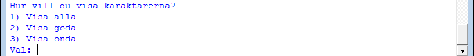
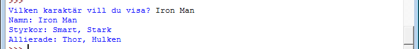
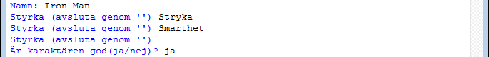
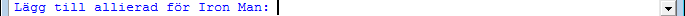

Inlämningsuppgift 6 - VG
1. Introduktion
Denna inlämningsuppgift har som syfte att examinera modul 7 som har fokus på arv i objektorienterad programmering, för nivån VG.
Inlämningsuppgiften är individuell. Det betyder att studenten enskilt ska utforma och skriva sin inlämning samt kunna redogöra för alla delar av den. Det är så klart inte förbjudet att diskutera uppgiften. Men viktigt är alltså att det man lämnar in representerar ens egna arbete.
2. Uppgiftsbeskrivning
Vi kommer att utgå från den förra uppgiften där ni skapat klasserna Character, Hero, Villian. Det VG-uppgiften nu ska tillföra är att bygga ett program kring dessa klasserna.
Vi ska skapa ett program med huvudfunktionerna:
- Visa karaktärer
- Kunna välja om man vill visa alla/goda/onda
- Visa detaljerad information kring en karaktär
- Information som namn, styrkor, ev. allierade/fiender
- Kunna lägga till nya karaktärer
- Antingen ond eller god
- Kunna redigerara en karaktär
- Byta namn
- Lägga till/ta bort styrka
- Lägga till/ta bort allierande (god), eller huvudfiende (ond)
- Ta bort en karaktär
- Avsluta programmet
Upplägget av karaktärerna ska följa det som finns beskrivet i föregående uppgift, t.ex. att en hjältes allierade finns i en lista bestående av instanser/objekt av andra hjältar (alltså inte en textsträng med bara namnet).
Alla karaktärer ska sparas i en lista som hanteras av ert program.
2.1. Visa karaktärer
Här ska användaren få välja om den vill se alla karaktärer (namnet på karaktären), bara de goda karaktärerna eller bara de onda karaktärerna.

2.2. Visa detaljerad information kring en karaktär
Här ska en karaktär listas med all information som finns knuten till vald karaktär.

2.3. Kunna lägga till en karaktär (ond eller god)
När vi skapar en karaktär vill vi från början bara lägga till namn och styrkor.

Eventuella allierade och fiender läggs till senare under redigera karaktär.
2.4. Kunna redigerara en karaktär
Vi vill kunna redigera alla våra karaktärer genom att:
- Kunna byta namn
- Kunna lägga till/ta bort styrkor
- Om ond: Kunna lägga till/ta bort antagonist
- Om god: Kunna lägga till/ta bort allierade
T.ex.

2.5. Ta bort en karaktär
Vi ska även kunna ta bort en karaktär från vårt program. (Tänk på att ta bort alla referenser till karraktären.)
3. Viktigt i denna inlämningsuppgift
Det finns några saker som är extra viktigt och måste följas i denna inlämningsuppgift.
- Klasser som representerar våra karaktärer får inte göra några utskrifter - detta ska andra delar av programmet sköta. Vi vill separera klasser som hanterar data från klasser som hanterar programmets flöde och användargränssnitt. Inspireras gärna av ett MVC-upplägg.
- Det ska finnas felkontroller som kontrollerar så att användaren anger korrekt input .
- När man t.ex. ska lägga till en allierad till en hjälte måste ni först kontrollera så att den hjälte vi vill alliera med finns i listan med karaktärer.
4. Bedömning
Uppgiften kan ge betyget väl godkänt. För att nå detta betyg behöver programmet uppfylla uppgiftsbeskrivningen, vara välstrukturerat och väldokumenterat. Extra viktiga punkter är:
- Koden ska vara strukturerad med ett antal klasser och funktioner, där varje del har begränsat syfte och omfattning.
- Koden ska vara tydlig och lättläst med avseende på namngivning, strukturering och kommentarer. Funktioner som inte är självförklarande ska ha en beskrivning i form av docstrings (
''' Kommentar för funktionen '''-kommentarer).
4.1. Specifika krav för uppgiften
- Ni ska använda er utav tre klasser (
Character,HeroochVilliandär de två senare ärver från klassenCharacter) för att bygga programmets funktionalitet. - Ni ska uppnå punkterna under sektionen 3. Viktigt i denna inlämningsuppgift
5. Redovisning
Redovisa genom att ladda upp programmets källkod på It’s Learning.
Ett program som följer objektorienterade principer och god programmeringssed, inklusive kraven ovan, ger VG för momentet (förutsatt att tidigare uppgifter är godkända).
Enligt Malmö högskolas regler är plussning - omexamination i syfte att höja ett redan godkänt betyg - inte tillåtet. Man kan alltså inte “komplettera upp” sitt betyg. En inlämning som inte uppfyller kraven ger således G för momentet (förutsatt att tidigare uppgifter är godkända). Är du osäker på någon del? Fråga innan du lämnar in!
För inlämningar som ligger på gränsen kan en muntlig genomgång av koden krävas.
Det finns tre möjliga deadlines:
- Tisdag 2014-11-18.
- Vid tentan i december.
- Vid kursslut.